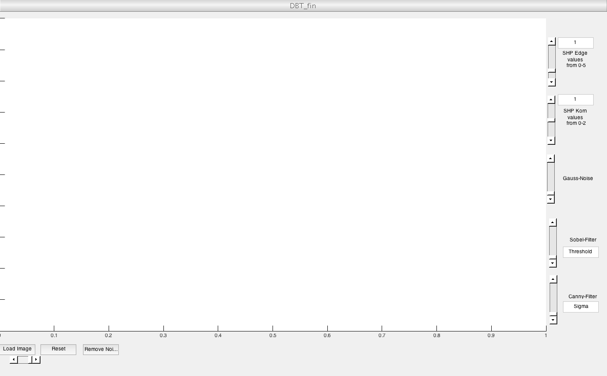

function varargout = DBT_fin(varargin) % DBT_FIN MATLAB code for DBT_fin.fig % DBT_FIN, by itself, creates a new DBT_FIN or raises the existing % singleton*. % % H = DBT_FIN returns the handle to a new DBT_FIN or the handle to % the existing singleton*. % % DBT_FIN('CALLBACK',hObject,eventData,handles,...) calls the local % function named CALLBACK in DBT_FIN.M with the given input arguments. % % DBT_FIN('Property','Value',...) creates a new DBT_FIN or raises the % existing singleton*. Starting from the left, property value pairs are % applied to the GUI before DBT_fin_OpeningFcn gets called. An % unrecognized property name or invalid value makes property application % stop. All inputs are passed to DBT_fin_OpeningFcn via varargin. % % *See GUI Options on GUIDE's Tools menu. Choose "GUI allows only one % instance to run (singleton)". % % See also: GUIDE, GUIDATA, GUIHANDLES % Edit the above text to modify the response to help DBT_fin % Last Modified by GUIDE v2.5 19-Oct-2016 13:15:04 % Begin initialization code - DO NOT EDIT gui_Singleton = 1; gui_State = struct('gui_Name', mfilename, ... 'gui_Singleton', gui_Singleton, ... 'gui_OpeningFcn', @DBT_fin_OpeningFcn, ... 'gui_OutputFcn', @DBT_fin_OutputFcn, ... 'gui_LayoutFcn', [] , ... 'gui_Callback', []); if nargin && ischar(varargin{1}) gui_State.gui_Callback = str2func(varargin{1}); end if nargout [varargout{1:nargout}] = gui_mainfcn(gui_State, varargin{:}); else gui_mainfcn(gui_State, varargin{:}); end % End initialization code - DO NOT EDIT % --- Executes just before DBT_fin is made visible. function DBT_fin_OpeningFcn(hObject, eventdata, handles, varargin) % This function has no output args, see OutputFcn. % hObject handle to figure % eventdata reserved - to be defined in a future version of MATLAB % handles structure with handles and user data (see GUIDATA) % varargin command line arguments to DBT_fin (see VARARGIN) % Choose default command line output for DBT_fin handles.output = hObject; % Update handles structure guidata(hObject, handles); % UIWAIT makes DBT_fin wait for user response (see UIRESUME) % uiwait(handles.figure1); % --- Outputs from this function are returned to the command line. function varargout = DBT_fin_OutputFcn(hObject, eventdata, handles) % varargout cell array for returning output args (see VARARGOUT); % hObject handle to figure % eventdata reserved - to be defined in a future version of MATLAB % handles structure with handles and user data (see GUIDATA) % Get default command line output from handles structure varargout{1} = handles.output; % --- Executes on button press in pushbutton1. function pushbutton1_Callback(hObject, eventdata, handles) % hObject handle to pushbutton1 (see GCBO) % eventdata reserved - to be defined in a future version of MATLAB % handles structure with handles and user data (see GUIDATA) [myTotalFileName, myStatus] = getRawFile4Read( '*.*'); if myStatus==0 return; end [ theRGB, myHeader] = imread( myTotalFileName); %Auslesen der Image-Dimensionen [width,height,z1] = size(theRGB); imshow(theRGB, 'Parent', handles.axes1); assignin('base','width',width); assignin('base','height',height); assignin('base','theRGB',theRGB); input.width=width; input.height=height; %Umwandlung in lineares RGB theRGB = im2double (theRGB); theRGB = - log10(theRGB); linRGB = 10.^(- theRGB); %Darstellen der RGB-Datei, der Originammmmmmmmmmmmmmmmmmmmmmmm ml-Datei also %imdisplay(linRGB, 'linRGB Original',1.0); %Umwandlung in (Agfa-)Lab durch Wandlung in XYZ-Werte und Übertragung %dieser in den Lab-Raum. %Agfa-Lab ist Lab, bitte belehren Sie mich eines besseren wenn Sie es %können. RGB2Lab = [1/3, 1/3, 1/3; 1/2, -1/2, 0; 1/4, 1/4, -1/2]; RGB2XYZ =[0.5767309, 0.1855540, 0.1881852; 0.2973769, 0.6273491 , 0.0752741; 0.0270343, 0.0706872 , 0.9911085]; XYZ2RGB = inv(RGB2XYZ); theXYZ = imMatMul( linRGB,RGB2XYZ); theLab= imXYZ2Lab(theXYZ); %Erstellen einer Kopie für das gefilterte Bild %Rücktransformation in anderen Farbraum zu Testzwecken ob Transformation %vollzogen theTestforRightConversationMatrix= theLab; %Erstellen einer Kopie in die dann der angepasste L-Channel eingefügt %wird. labSharpened = theLab; noisedLab = theLab; %Separieren des Luminance-Channels. Dieser ist definitiv in Channel 1 zu %finden, da in Channel 2 und 3 negative sowie positive Werte zu finden %sind. Dies ist logisch wenn man bedenkt, dass sich der Farbraum von -a bis +a sowie -b bis +b erstrecken kann. Das Maximimum in Channel 1 beträgt ebenso 100, was für den %LAB-CHannel in CHannel 1 spricht. lChannel=theLab(:,:,1); % imdisplay(theLab(:,:,1), 'the l channel ',2.2); input.theRGB=theRGB; input.theXYZ=theXYZ; input.width=width; input.height=height; input.theLab=theLab; input.lChannel=lChannel; input.lChannelTemp=lChannel; input.noisedLab =theLab; labTemp=theLab; myControl = buildControlDataIE(); assignin('base','myControl',myControl); assignin('base','input',input); assignin('base','labTemp',labTemp); handles.metricdata.input = input; handles.metricdata.myControl = myControl; handles.metricdata.input.lChannelTempNoise=lChannel; assignin('base','lChannelTemp',lChannel); assignin('base','lChannelOrig',lChannel); guidata(hObject,handles); clear BW; % --- Executes on slider movement. function slider1_Callback(hObject, eventdata, handles) % hObject handle to slider1 (see GCBO) % eventdata reserved - to be defined in a future version of MATLAB % handles structure with handles and user data (see GUIDATA) % Hints: get(hObject,'Value') returns position of slider % get(hObject,'Min') and get(hObject,'Max') to determine range of slider %Erstellen eines Binomialfilters 7. Ordnung h = [1/2 1/2]; lChannelTemp = evalin('base','lChannelTemp'); binomialCoeff = conv(h,h); for n = 1:7 binomialCoeff = conv(binomialCoeff,h); end myControl=evalin('base','myControl'); lChannel=evalin('base','lChannelOrig'); labTemp=evalin('base','labTemp'); width=handles.metricdata.input.width; height=handles.metricdata.input.height; %Filtern des L-Channels und schreiben in binomiaLfiltered binomiaLfiltered = filter(binomialCoeff, 1, lChannel); %Erstellen eines geschärften LChannels durch Addition hoher Frequenzen %Schritt 1: Erstellen der Maske lChannelSharp=lChannel-binomiaLfiltered; %Schritt 2: Addition des geschärften Kanten-Bereichs zum Original L-Channel in Abhängigkeit % von SHPEdge, % Bei SHPEdge =1 keine Veränderung, wie verlangt SHPEdge=get(hObject,'Value'); SHPEdge=SHPEdge*5; kk=get(hObject,'Max'); disp(SHPEdge); disp(kk); if SHPEdge==1 lChannelNewKante=lChannel; else lChannelNewKante=lChannel; lChannelNewKante=lChannelSharp*(SHPEdge-1)+lChannel; end %Schritt 3: Addition des geschärften Korn-Bereichs zum Original L-Channel in Abhängigkeit % von SHPArea, % Bei SHPArea =1 keine Veränderung, wie verlangt BW = evalin('base','BW'); for W=10:width for H=10:height if (BW(W,H)==1 ) if lChannelNewKante(W,H)>100; disp(lChannelNewKante(W,H)); lChannelNewKante(W,H)=100; end lChannelTemp(W,H)=lChannelNewKante(W,H); labTemp(W,H,1) = lChannelTemp(W,H); end end end assignin('base','lChannelTemp',lChannelTemp); assignin('base','labTemp',labTemp); %Anzeigen des verrauschten Bildes durch Rücktransformation zu LAB und RGB min=get(hObject,'Min');max=get(hObject,'Max'); disp (min); disp (max); fog=get(hObject,'Value');disp(fog); theXYZ4 = imLab2XYZ(labTemp); theRGBSharp3= imMatMul( theXYZ4, myControl.XYZ2RGB); %puts the slider value into the edit text component set(handles.edit1,'String',SHPEdge); imshow(theRGBSharp3, 'Parent', handles.axes1); % --- Executes during object creation, after setting all properties. function slider1_CreateFcn(hObject, eventdata, handles) % hObject handle to slider1 (see GCBO) % eventdata reserved - to be defined in a future version of MATLAB % handles empty - handles not created until after all CreateFcns called % Hint: slider controls usually have a light gray background. if isequal(get(hObject,'BackgroundColor'), get(0,'defaultUicontrolBackgroundColor')) set(hObject,'BackgroundColor',[.9 .9 .9]); end uicontrol('Style', 'slider', 'Min',0,'Max',1, 'SliderStep',[0.01 0.3], 'Value', 1); % --- Executes on slider movement. function slider2_Callback(hObject, eventdata, handles) % hObject handle to slider2 (see GCBO) % eventdata reserved - to be defined in a future version of MATLAB % handles structure with handles and user data (see GUIDATA) % Hints: get(hObject,'Value') returns position of slider % get(hObject,'Min') and get(hObject,'Max') to determine range of slider %Erstellen eines Binomialfilters 7. Ordnung h = [1/2 1/2]; binomialCoeff = conv(h,h); for n = 1:7 binomialCoeff = conv(binomialCoeff,h); end lChannelTemp=evalin('base','lChannelTemp'); lChannel=evalin('base','lChannelOrig'); labTemp=evalin('base','labTemp'); BW=evalin('base','BW'); width=handles.metricdata.input.width; height=handles.metricdata.input.height; %Filtern des L-Channels und schreiben in binomiaLfiltered binomiaLfiltered = filter(binomialCoeff, 1, lChannel); %Erstellen eines geschärften LChannels durch Addition hoher Frequenzen %Schritt 1: Erstellen der Maske lChannelSharp=lChannel-binomiaLfiltered; SHPArea=get(hObject,'Value'); SHPArea=SHPArea*2; lChannelNewKorn=lChannelSharp*(SHPArea-1)+lChannel; %imshow(BW); % Nun muss das BW Bild abgegangen werden, an den Stellen mit einer % notierten 0 befindet sich ein Korn. Nun muss dieses Korn und nur diese % Korn verschärft werden. Also nimmt man das Originalbild und schreibt an % Stellen an den man eine Korn detektiert hatte im BW bild, den Wert des geschärften L-Channels % Und schreibt diesen in das LAB Bild um so ein geschärftes Korn zu erhalten. for W=10:width for H=10:height if (BW(W,H)==0 ) if lChannelNewKorn(W,H)>100; disp(lChannelNewKorn(W,H)); lChannelNewKorn(W,H)=100; end lChannelTemp(W,H)=lChannelNewKorn(W,H); labTemp(W,H,1) = lChannelTemp(W,H); end end end assignin('base','lChannelTemp',lChannelTemp); assignin('base','labTemp',labTemp); %Anzeigen des verrauschten Bildes durch Rücktransformation zu LAB und RGB theXYZ8 = imLab2XYZ(labTemp); myControl=handles.metricdata.myControl; theRGBSharp= imMatMul( theXYZ8, myControl.XYZ2RGB); %puts the slider value into the edit text component set(handles.edit2,'String',SHPArea); imshow(theRGBSharp, 'Parent', handles.axes1); % --- Executes during object creation, after setting all properties. function slider2_CreateFcn(hObject, eventdata, handles) % hObject handle to slider2 (see GCBO) % eventdata reserved - to be defined in a future version of MATLAB % handles empty - handles not created until after all CreateFcns called % Hint: slider controls usually have a light gray background. if isequal(get(hObject,'BackgroundColor'), get(0,'defaultUicontrolBackgroundColor')) set(hObject,'BackgroundColor',[.9 .9 .9]); end uicontrol('Style', 'slider', 'Min',0,'Max',1, 'SliderStep',[0.01 0.3], 'Value', 1); % --- Executes on slider movement. function slider3_Callback(hObject, eventdata, handles) % hObject handle to slider3 (see GCBO) % eventdata reserved - to be defined in a future version of MATLAB % handles structure with handles and user data (see GUIDATA) % Hints: get(hObject,'Value') returns position of slider % get(hObject,'Min') and get(hObject,'Max') to determine range of slider %Auftragen eines weissen Rauschens auf LChannel, vo n daher normieren auf %Werte zwiscehn 0 und 1 ( Teilen durch 100) inputm=evalin('base','input'); noisedLab=inputm.noisedLab; inputm=inputm.lChannel; slider=get(hObject,'Max'); disp(slider); myControl=handles.metricdata.myControl; sigmaNoise=0; sigmaNoise=get(hObject,'Value'); noise=inputm./100; lChannelnoiesd = imnoise(noise,'gaussian',0,sigmaNoise/100); %Rücktransformation auf Ursprungszustand durch multiplizieren mit 100 lChannelnoiesd=lChannelnoiesd.*100; % Schreiben des vernoisten Channel in das Bild noisedLab noisedLab(:,:,1)=lChannelnoiesd(:,:); %Anzeigen des verrauschten Bildes durch Rücktransformation zu LAB und RGB assignin('base','noisedLab',noisedLab); assignin('base','lChannelOrig',lChannelnoiesd(:,:)); theXYZ4 = imLab2XYZ(noisedLab); theRGBNOIsed= imMatMul( theXYZ4, myControl.XYZ2RGB); handles.metricdata.input.lChannelTemp=lChannelnoiesd(:,:); %handles.metricdata.input.lChanneltemp=lChannelnoiesd(:,:); imshow(theRGBNOIsed, 'Parent', handles.axes1); % --- Executes during object creation, after setting all properties. function slider3_CreateFcn(hObject, eventdata, handles) % hObject handle to slider3 (see GCBO) % eventdata reserved - to be defined in a future version of MATLAB % handles empty - handles not created until after all CreateFcns called % Hint: slider controls usually have a light gray background. if isequal(get(hObject,'BackgroundColor'), get(0,'defaultUicontrolBackgroundColor')) set(hObject,'BackgroundColor',[.9 .9 .9]); end uicontrol('Style', 'slider', 'Min',0,'Max',1 , 'SliderStep',[0.01 0.3], 'Value', 0); % --- Executes on button press in pushbutton2. function pushbutton2_Callback(hObject, eventdata, handles) % hObject handle to pushbutton2 (see GCBO) % eventdata reserved - to be defined in a future version of MATLAB % handles structure with handles and user data (see GUIDATA) %Anlegen eines SobelFilters, dieser gibt BW-Bild zurück, eine 1 steht für %Kantendetektion lChannel=evalin('base','lChannelOrig'); BW = edge(lChannel,'Sobel',thresholdSobel,'both'); %imshow(BW); % Nun muss das BW Bild abgegangen werden, an den Stellen mit einer % notierten 1 befindet sich eine Kante. Nun muss diese Kante und nur diese % Kante verschärft werden. Also nimmt man das Originalbild und schreibt an % Stellen an den man eine Kante detektiert hatte im BW bild, den Wert des geschärften L-Channels % Und schreibt diesen in das LAB Bild um so ein geschärfte Kanten zu erhalten. %Alternativ: Anlegen eines Gradientenoperators, dieser gibt Binär-Bild zurück, eine 1 steht für %Kantendetektion thresholdCanny=0.05; sigma=2^.5 %Paramter sigma_local^2 / (sigma_local^2 + sigma_noise^2) liefert keine %zufriedenstellenden Ergebnisse, deshalb Nutzung eines Canny-Filters, %welcher einem Gradienten-Operator mit Schwellwert BW = edge(lChannel,'Canny',[0.1,0.15], sigma); imdisplay(BW, 'Kantendetektor Canny ',1.0); assignin('base','BW',BW); handles.metricdata.input.BW=BW; function edit1_Callback(hObject, eventdata, handles) % hObject handle to edit1 (see GCBO) % eventdata reserved - to be defined in a future version of MATLAB % handles structure with handles and user data (see GUIDATA) % Hints: get(hObject,'String') returns contents of edit1 as text % str2double(get(hObject,'String')) returns contents of edit1 as a double % --- Executes during object creation, after setting all properties. function edit1_CreateFcn(hObject, eventdata, handles) % hObject handle to edit1 (see GCBO) % eventdata reserved - to be defined in a future version of MATLAB % handles empty - handles not created until after all CreateFcns called % Hint: edit controls usually have a white background on Windows. % See ISPC and COMPUTER. if ispc && isequal(get(hObject,'BackgroundColor'), get(0,'defaultUicontrolBackgroundColor')) set(hObject,'BackgroundColor','white'); end function edit2_Callback(hObject, eventdata, handles) % hObject handle to edit2 (see GCBO) % eventdata reserved - to be defined in a future version of MATLAB % handles structure with handles and user data (see GUIDATA) % Hints: get(hObject,'String') returns contents of edit2 as text % str2double(get(hObject,'String')) returns contents of edit2 as a double % --- Executes during object creation, after setting all properties. function edit2_CreateFcn(hObject, eventdata, handles) % hObject handle to edit2 (see GCBO) % eventdata reserved - to be defined in a future version of MATLAB % handles empty - handles not created until after all CreateFcns called % Hint: edit controls usually have a white background on Windows. % See ISPC and COMPUTER. if ispc && isequal(get(hObject,'BackgroundColor'), get(0,'defaultUicontrolBackgroundColor')) set(hObject,'BackgroundColor','white'); end % --- Executes on slider movement. function slider6_Callback(hObject, eventdata, handles) % hObject handle to slider6 (see GCBO) % eventdata reserved - to be defined in a future version of MATLAB % handles structure with handles and user data (see GUIDATA) % Hints: get(hObject,'Value') returns position of slider % get(hObject,'Min') and get(hObject,'Max') to determine range of slider thresholdSobel=get(hObject,'Value'); thresholdSobel=thresholdSobel*10; lChannel=evalin('base','lChannelOrig'); BW = edge(lChannel,'Sobel',thresholdSobel,'both'); assignin('base','BW',BW); set(handles.edit5,'String',thresholdSobel); imshow(BW, 'Parent',handles.axes1); %imshow(BW); % Nun muss das BW Bild abgegangen werden, an den Stellen mit einer % notierten 1 befindet sich eine Kante. Nun muss diese Kante und nur diese % Kante verschärft werden. Also nimmt man das Originalbild und schreibt an % Stellen an den man eine Kante detektiert hatte im BW bild, den Wert des geschärften L-Channels % Und schreibt diesen in das LAB Bild um so ein geschärfte Kanten zu erhalten. %Alternativ: Anlegen eines Gradientenoperators, dieser gibt Binär-Bild zurück, eine 1 steht für %Kantendetektion % --- Executes during object creation, after setting all properties. function slider6_CreateFcn(hObject, eventdata, handles) % hObject handle to slider6 (see GCBO) % eventdata reserved - to be defined in a future version of MATLAB % handles empty - handles not created until after all CreateFcns called % Hint: slider controls usually have a light gray background. if isequal(get(hObject,'BackgroundColor'), get(0,'defaultUicontrolBackgroundColor')) set(hObject,'BackgroundColor',[.9 .9 .9]); end % --- Executes on slider movement. function slider7_Callback(hObject, eventdata, handles) % hObject handle to slider7 (see GCBO) % eventdata reserved - to be defined in a future version of MATLAB % handles structure with handles and user data (see GUIDATA) % Hints: get(hObject,'Value') returns position of slider % get(hObject,'Min') and get(hObject,'Max') to determine range of slider thresholdCanny=get(hObject,'Value'); thresholdCanny=thresholdCanny*2^.5*2; sigma=thresholdCanny; lChannel=evalin('base','lChannelOrig'); %Paramter sigma_local^2 / (sigma_local^2 + sigma_noise^2) liefert keine %zufriedenstellenden Ergebnisse, deshalb Nutzung eines Canny-Filters, %welcher einem Gradienten-Operator mit Schwellwert BW = edge(lChannel,'Canny',[0.1,0.15], sigma); assignin('base','BW',BW); imshow(BW, 'Parent',handles.axes1); set(handles.edit4,'String',sigma); % --- Executes during object creation, after setting all properties. function slider7_CreateFcn(hObject, eventdata, handles) % hObject handle to slider7 (see GCBO) % eventdata reserved - to be defined in a future version of MATLAB % handles empty - handles not created until after all CreateFcns called % Hint: slider controls usually have a light gray background. if isequal(get(hObject,'BackgroundColor'), get(0,'defaultUicontrolBackgroundColor')) set(hObject,'BackgroundColor',[.9 .9 .9]); end function edit4_Callback(hObject, eventdata, handles) % hObject handle to edit4 (see GCBO) % eventdata reserved - to be defined in a future version of MATLAB % handles structure with handles and user data (see GUIDATA) % Hints: get(hObject,'String') returns contents of edit4 as text % str2double(get(hObject,'String')) returns contents of edit4 as a double % --- Executes during object creation, after setting all properties. function edit4_CreateFcn(hObject, eventdata, handles) % hObject handle to edit4 (see GCBO) % eventdata reserved - to be defined in a future version of MATLAB % handles empty - handles not created until after all CreateFcns called % Hint: edit controls usually have a white background on Windows. % See ISPC and COMPUTER. if ispc && isequal(get(hObject,'BackgroundColor'), get(0,'defaultUicontrolBackgroundColor')) set(hObject,'BackgroundColor','white'); end % --- Executes on button press in pushbutton4. function pushbutton4_Callback(hObject, eventdata, handles) % hObject handle to pushbutton4 (see GCBO) % eventdata reserved - to be defined in a future version of MATLAB % handles structure with handles and user data (see GUIDATA) input=evalin('base','input'); myControl=evalin('base','myControl'); labTemp=evalin('base','labTemp'); lChannelOrig=input.lChannel; labTemp(:,:,1)=lChannelOrig(:,:); assignin('base','lChannelOrig',lChannelOrig); theXYZ4 = imLab2XYZ(labTemp); RGBRESETed= imMatMul( theXYZ4, myControl.XYZ2RGB); imshow(RGBRESETed, 'Parent',handles.axes1); set(handles.slider1,'Value',0.1); set(handles.slider2,'Value',0.5); va=1; va2=1; set(handles.edit1,'String',va2); set(handles.edit2,'String',va); imshow(RGBRESETed, 'Parent',handles.axes1); % --- Executes on button press in pushbutton5. function pushbutton5_Callback(hObject, eventdata, handles) % hObject handle to pushbutton5 (see GCBO) % eventdata reserved - to be defined in a future version of MATLAB % handles structure with handles and user data (see GUIDATA) noise=evalin('base','lChannelOrig'); myControl=evalin('base','myControl'); lChannel = wiener2(noise,[4 4]); input=evalin('base','input'); noisedLab=input.noisedLab; noisedLab(:,:,1)=lChannel(:,:); %assignin('base','lChannelOrig',lChannelOrig); theXYZ4 = imLab2XYZ(noisedLab); RGBRESETed= imMatMul( theXYZ4, myControl.XYZ2RGB); set(handles.slider1,'Value',0.1); set(handles.slider2,'Value',0.5); va=0.5; va2=0.1; set(handles.edit1,'String',va2); set(handles.edit2,'String',va); imshow(RGBRESETed, 'Parent',handles.axes1); function edit5_Callback(hObject, eventdata, handles) % hObject handle to edit5 (see GCBO) % eventdata reserved - to be defined in a future version of MATLAB % handles structure with handles and user data (see GUIDATA) % Hints: get(hObject,'String') returns contents of edit5 as text % str2double(get(hObject,'String')) returns contents of edit5 as a double % --- Executes during object creation, after setting all properties. function edit5_CreateFcn(hObject, eventdata, handles) % hObject handle to edit5 (see GCBO) % eventdata reserved - to be defined in a future version of MATLAB % handles empty - handles not created until after all CreateFcns called % Hint: edit controls usually have a white background on Windows. % See ISPC and COMPUTER. if ispc && isequal(get(hObject,'BackgroundColor'), get(0,'defaultUicontrolBackgroundColor')) set(hObject,'BackgroundColor','white'); end